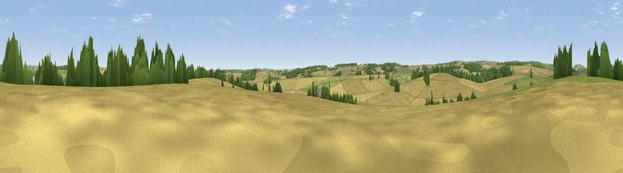

Viewpoint near Charlton Marshall
#36239 in England · top 75% of its area beats it · near Charlton MarshallThe view, rendered

A 360° render of this exact spot computed from the terrain model, tree cover and land cover — summer colours, afternoon light, calibrated against photographs of famous viewpoints. Real trees, hedges and buildings will differ in detail.
The panorama
Grey silhouette: terrain skyline in each direction (720 bearings, Earth curvature and refraction included). Dashed green: skyline with trees (+15 m) and buildings (+8 m) as obstacles. Blue strip: how far the ground is visible on each bearing.
Where the view opens
Wedge length = distance to the farthest visible ground on that bearing (vegetation-aware). Rings at 10, 25 and 50 km.
What fills the view
62% cropland · 25% grassland · 12% woodland · 2% built-up
Angular shares of the visible panorama (visual magnitude), not map area. Landscape diversity 0.42 (0–1 Shannon).
Key numbers
More beautiful places nearby
The staircase of upgrades: each row has a higher view potential than everything closer. Driving times are estimates from straight-line distance, calibrated against real road routing — check an actual route before setting out.
| Place | Direction | Drive | Score |
|---|---|---|---|
| Viewpoint near Spetisbury | SE · 3 km | ~6 min | 38.6 |
| Viewpoint near Charlton Marshall | E · 3 km | ~7 min | 41.4 |
| Viewpoint near Spetisbury | SE · 3 km | ~8 min | 45.2 |
| Viewpoint near Stourpaine | NNW · 6 km | ~13 min | 47.7 |
| Viewpoint near Winterborne Houghton | W · 6 km | ~14 min | 54.1 |
| Viewpoint near Winterborne Houghton | W · 7 km | ~15 min | 59.9 |
| Viewpoint near Milton Abbas | W · 8 km | ~16 min | 64.2 |
| Hambledon Hill | NNW · 9 km | ~18 min | 72.7 |
50.83609, -2.16077 · source: screening · position refined by local search. Computed location — check access rights before visiting.